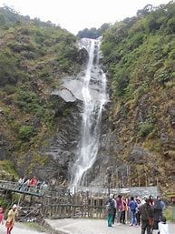

|
Bhim Falls (also known as Bheem Nala Falls) is a scenic multi-stage waterfall in North Sikkim near Lachung along the route to Yumthang Valley. Surrounded by green mountain slopes and crisp alpine air, it is a popular stop for travelers heading into North Sikkim. Visitors can watch the rushing water cascade down the rocks and enjoy the peaceful mountain atmosphere along the way. Highlights and Visitor Tips
Traveler Review"The roar of the waterfall from the wooden bridge is incredible, with cool mist drifting across the road. A refreshing stop on the drive toward Lachung." - Meera Nair Visitor Feedback Form |
 |